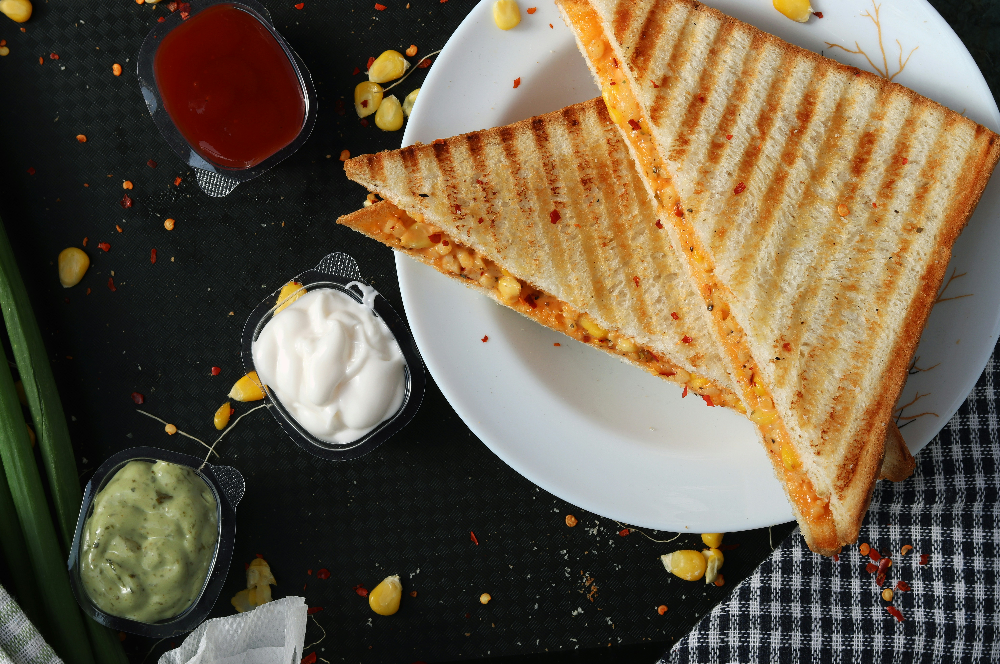

American Grilled Cheese Recipe
Home

Description
An all time classic American breakfast sandwich dish, simple to make and tastes incredible!
Ingredients
- Bread (2 slices)
- Stick of butter
- American cheese slices (up to you, but 2 slices is a fair minimum)
- (Optional) Bacon or salami slices for extra flavor
- Salt and pepper
Steps
- Use a non-stick pan and set it on a med-high heat stove
- Splish a bit of water to monitor temperature. Once it starts boiling, add 1/4 stick of butter
- Lower the heat to low, and start assembling the sandwich while waiting for temperature decrease
- Add ingredients in this order to the sandwich: bread, cheese slice, 2 bacon / 2 salami / 4 peperroni (optional), pinch of salt and pepper, cheese slice, bread
- Now add the bread to the stove and quickly move it around with your hands, ensuring the bread on the bottom is completely covered in butter
- Increase the heat slightly while monitoring the bottom of the bread
- Once the bread is to your ideal crispiness (a good starting point is golden-brown), quickly flip the sandwich
- Now add about 3/4 of the amount of butter you added to the side of the pan, let the butter completely melt
- Once completely melted, move the sandwich around so that the bottom bread is completely covered in butter. Warning: you may need a spatula to move the sandwich as the top may be hot!
- Let the bottom bread reach the ideal crispiness, while also checking if the cheese has melted by trying to slightly lift the top bread. If it sticks, you're good! If not, increase the heat slightly
- You're now done, slice it up and dig in!